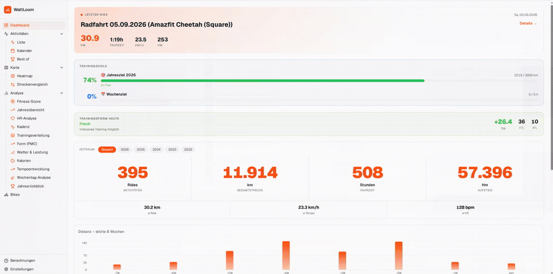
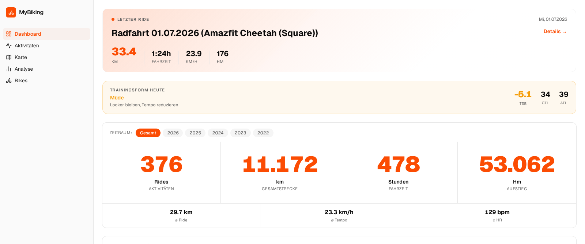
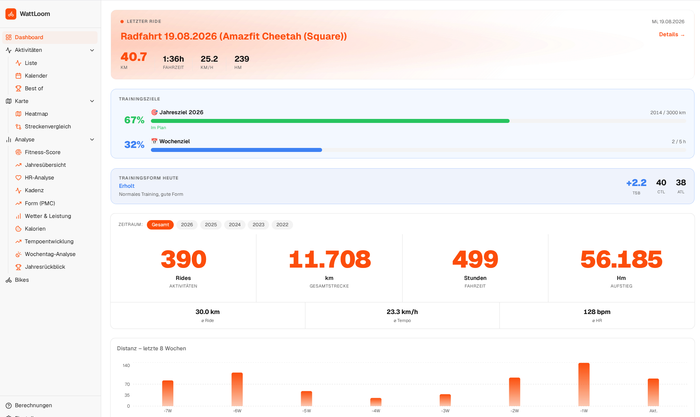

WattLoom
Local-first Strava analytics for cyclists
Analyze your complete Strava history on your own machine – no API access, no cloud upload, no subscription. Download the ZIP export, import it, done.
Analyze your complete Strava history on your own machine – no API access, no cloud upload, no subscription. Download the ZIP export, import it, done.

Built for one person, running entirely on their own machine.
Import your Strava ZIP export directly – no developer account, no rate limits, no paid API tier.
Your activities stay on your own machine. Nothing is ever uploaded anywhere.
Fully open source under AGPL-3.0 – no license key, ever.
Training, performance, weather, and bike maintenance in a single place.
A focused feature set for serious cyclists, not a generic fitness suite.
Form curve (CTL/ATL/TSB), HR curve, aerobic efficiency, cadence, fitness fingerprint score.
Wear tracking per component, purchase/stock inventory, maintenance cost per bike.
Temperature, wind and rain correlation via Open-Meteo – free, no paid tier required.
Best-effort segments per distance (5–70 km), automatic PR detection after every import.
Interactive track heatmap, route comparison by real point-by-point track matching.
SQLite database on disk, single process, no accounts, no telemetry.


| WattLoom | Strava | GoldenCheetah | Intervals.icu | |
|---|---|---|---|---|
| Local data | ✅ | ❌ | ✅ | ❌ |
| Strava API required | ❌ | — | optional | optional |
| Cloud account required | ❌ | ✅ | ❌ | ✅ |
| Web UI | ✅ | ✅ | ❌ (desktop app) | ✅ |
| Bike maintenance | ✅ | Limited | Limited (manual only) | not found |
| Weather analysis | ✅ (free) | Limited | not found | ✅ (paid tier only) |
One process, one port, no external services required.
Manual (Python + Node) install and systemd autostart: see the full README.